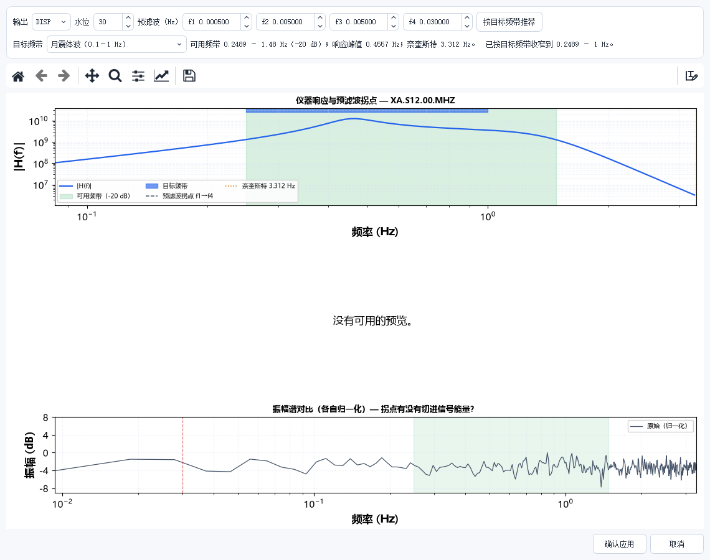
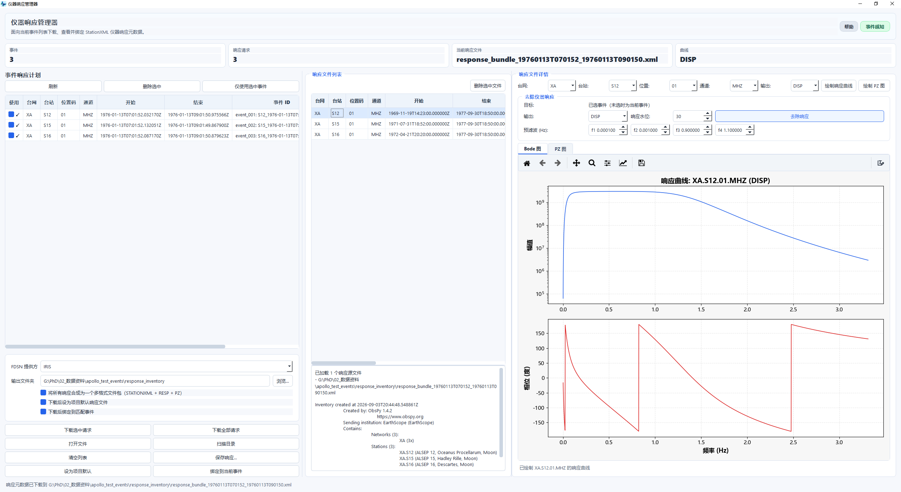

去仪器响应
地震仪记录的是电压/计数，不是地面运动。去仪器响应（也叫响应校正）就是把这个转换补回来， 让振幅具有物理意义——位移（m）、速度（m/s）或加速度（m/s²）。
不做这一步，幅值比较就没有意义：不同台站的仪器灵敏度不同，直接比较计数等于在比较仪器。
打开方式
数据 › 预处理 › 去除仪器响应（需先选中事件）。
界面

顶部参数
| 参数 | 默认 | 说明 |
|---|---|---|
| 输出 | DISP | 输出物理量：DISP 位移 / VEL 速度 / ACC 加速度。月震研究通常用 DISP |
| 水位 | 30 | 反卷积的水位值（dB），越大越稳定但会削弱低频 |
| 预滤波 f1–f4 | 0.0005 / 0.005 / 0.005 / 0.03 | 四个拐点频率（Hz）。这是最容易设错、也最影响结果的地方 |
| 按目标频带推荐 | — | 根据当前数据的可用频带自动填 f1–f4 |
目标频带提示条
参数下方一行小字是这块面板最有价值的信息：
可用频带 0.2489 – 1.48 Hz（−20 dB）｜响应峰值 0.4557 Hz｜奈奎斯特 3.312 Hz ｜已按目标频带收窄到 0.2489 – 1 Hz
- 可用频带：仪器响应在 −20 dB 以内、结果可信的频率范围；
- 响应峰值：仪器最灵敏的频率；
- 已收窄到：预滤波拐点与可用频带的交集。落在这个范围外的频率，去响应后的数据不可信。
预滤波拐点不要设得比可用频带更宽
把 f1 设到 0.001 Hz 看起来「保留更多低频」，实际上那一段的信噪比极低，
反卷积会把噪声放大成巨大的假信号。点「按目标频带推荐」是最稳的做法。
两张图怎么看
上图：仪器响应与预滤波拐点。 蓝线是仪器响应曲线 |H(f)|，绿色区是可用频带，
蓝色竖带是目标频带，虚线是预滤波拐点。要检查的是目标频带是否落在绿色区内。
下图：振幅谱对比（各自归一化）。 判断「拐点有没有切进信号能量」—— 如果目标频带的边界正好压在信号能量峰上，说明通带切掉了真实信号，需要放宽。
「没有可用的预览」是什么意思
当事件没有加载 StationXML 响应文件时，中间区域会显示这句话。此时去响应无法进行，
需要先在 工具 › 仪器响应管理器 里下载或绑定响应文件。
操作步骤
- 在事件列表里选中事件；
- 打开面板，先看「目标频带提示条」给出的可用频带；
- 点 按目标频带推荐，让预滤波拐点自动对齐；
- 检查下图——目标频带边界是否切在信号能量峰上，是则手工放宽；
- 确认 输出 与 水位（一般 30 即可）；
- 点 确认应用。处理后幅值单位变为物理单位，可撤销。
仪器响应管理器

入口：工具 › 仪器响应管理器。
去响应的前提是手上有响应文件。这个窗口负责三件事：查看已绑定的响应、 从台网下载缺失的响应、把响应和工程里的事件对应起来。
| 做什么 | 在哪 |
|---|---|
| 查看某台站/通道的响应曲线与灵敏度 | 左侧列表选中后看右侧 |
| 下载响应文件 | 从台网拉取（需要网络与台网权限） |
| 绑定到工程 | 让去响应面板能读到这条响应 |
先去这里看一眼再回去响应
去响应面板显示「没有可用的预览」，几乎总是因为这个管理器里还没绑定响应。
先在管理器里确认台站、通道、时间段三者都对得上，再回去响应，
比在去响应面板里反复试参数省时间。
响应文件有时间段
同一个台站不同时期的仪器可能换过，响应也随更换时间变化。
绑定时段和事件时段不重叠，去响应会用错仪器，结果看起来「正常」但幅值是错的。
常见问题
去响应后振幅变成天文数字？ 低频段噪声被反卷积放大了。把 f1 提高（比如 0.01 Hz），或提高水位值。
去响应后波形整体变平？ 预滤波把有效信号一起滤掉了。检查上图的目标频带是否与绿色可用频带错位。
多个台站要去响应，能批量吗？ 可以，用 工具 › 批处理工作流，或直接对整个事件列表执行。 每个事件的响应文件需要事先绑定，见「仪器响应管理器」章节。